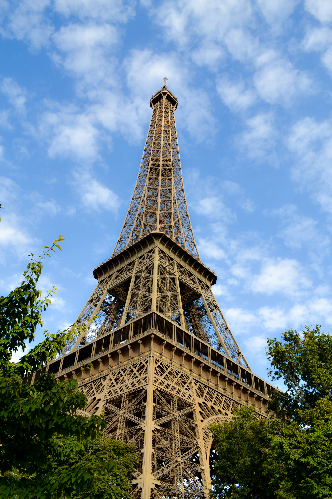

Paris is the capital of France and one of the most famous cites in the world. Known for its art, fashion, architecture, Paris has a population with over 2 million people living in the City, Paris has grown into a major centre for culture, tourism and history attracting millions of visitors every year.
Paris began as a small settlement founded by the Parisii, a Celtic tribe, around the 3rd century BC. The romans later conquered the area in 52 BC and named the town Lutetia. Over time it expanded along with the River Seine, by the early Middle Ages the city had grown significantly and became the capital of France.
In the Middle Ages Paris became an important centre of learning with the founding of the Sorbonne, but the city also faced major uprisings such as the merchant revolt of 1358, the maillot tax riot in 1382, and the Cabochien revolt in 1413. Paris was hit hard by the Black Death and later suffered during the Hundred Years War. In 1572 the St. Bartholomew’s day Massacre saw thousands of Protestants killed. The city played a key role in the French revolution, beginning with the storming of the Bastille in 1789. In the 1800s Napoleon reshaped Paris with major building projects and later Napoleon III and Baron Haussmann rebuilt the city’s layout, creating the wide boulevards seen today. Paris was occupied by Nazi Germany in 1940 but liberated in 1944. Modern events include the students protest of May 1968 and the terrorist attacks of 2015.
Paris is a city known for its unique layout, divided into 20 arrondissements that spiral out from the centre, each with its own atmosphere from the stylish Marais and lively Latin Quarter to the iconic Champs-Elysees. Its streets are filled with charming squares, hidden cafes, boutique shops, and a mix of architectural styles ranging from medieval designs and Renaissance influences to Napoleonic grandeur, art deco and modern creations. Paris is also world famous for its museums, including the Louvre, home to the Mona Lisa, and the Musee d ‘Orsay, a former train station showcasing major impressionist masterpieces. Music is another key part of Parisian culture with classical orchestras performing at venues like the Philharmonie de Paris, alongside a vibrant modern scene featuring jazz, rock, electronic, and global music across the city’s countless bars and clubs.